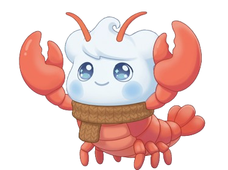

MET TERM · 氣象術語整理
氣象辭典
青絲白髮一瞬間，年華老去向誰言
本網頁內容為實驗性質，網頁整體風格為科技文青溫暖風格。

首頁
全部
A
B
C
D
E
F
G
H
I
J
K
L
M
N
O
P
Q
R
S
T
U
V
W
X
Y
Z
每頁 20 筆
每頁 50 筆
每頁 100 筆
清除搜尋
上一頁
下一頁
資料集：全部
整合術語總數：9431
載入中…
English term
繁體中文
名詞解釋
正在載入術語資料…
第 1 頁 / 共 1 頁
第一頁
最後一頁
全部頁面保留給需要全站檢索的人使用；本站現在在瀏覽端預先建立搜尋索引、加入輸入防抖，並使用 localStorage 快取已下載 JSON，以減輕 9,431 筆資料的再次開啟與搜尋負擔。